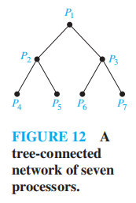
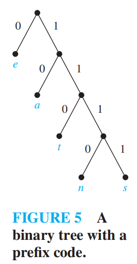

Chap 11 Trees
注：[[Chap 4 Trees|相关内容]]在fds已讲过，可以互为参照
11.1 Introduction to Trees
定义：树(trees) 是没有简单环的连通无向图
注：因为没有简单环，因此树也就不包含重边和自环
没有简单环，但不连通的无向图称为森林(forests)，它的连通分量是一棵树
🌰：

定理1：当且仅当无向图上任意两点间有唯一的一条路径时，该图是一棵树
证明难度不大（考虑充分性和必要性），故略
Rooted Trees
定义：
- 有根树(rooted tree) 是一棵树，它指定某一个顶点作为整棵树的根，每条边被视为从根“离开”
- m叉树(m-ary tree)：每个内部顶点的孩子的个数不超过m的有根树
- 满m叉树(full m-ary tree)：每个内部顶点有且有m个孩子的有根树([[Chap 5 Induction and Recursion#^69caaa|Chap 5]]介绍过满二叉树)
- 二叉树(binary tree)：m = 2
- 有序根树(ordered rooted tree)：所有内部顶点的孩子按顺序排列(从左往右)的有根树
注： + Chap 5中我们曾介绍过有根树的[[Chap 5 Induction and Recursion#^48e059|递归定义]] + 选择不同的根，就会产生不同的有根树，边的“方向”也是不同的 🌰：
+ 有根树的其他基本概念(诸如什么是父节点、子节点……)见fds[[Chap 4 Trees#Definitions|对应部分]] + 二叉树的基本概念：左孩子(left child)、右孩子(right child)、左子树(left subtree)、右子树(right subtree)
Trees as Models
树模型的应用： 1. 饱和烃(saturated hydrocarbons)
注：树模型的最早应用
 2. 组织架构
3. 计算机文件系统
2. 组织架构
3. 计算机文件系统

注：fds介绍过[[Chap 4 Trees#Application(File System)|类似内容]]，且更加详细
- 树连通的并行处理器
[[Chap 10 Graph#^5b6fdb|前景回顾]]
这样的网络可以用一棵完全二叉树表示： + 既非叶子亦非根的顶点可以双向连通：与父顶点连通的1条连接，以及与孩子顶点连通的2条连接 + 根顶点：与孩子顶点连通的2条连接 + 叶子顶点：与父顶点连通的1条连接
🌰： 
Properties of Trees
定理2：一棵具有n个顶点的树有n - 1条边
证明可以采用归纳法——但我认为是小题大做，因为很容易理解：除了根外，每个顶点的上头都有一条不同的边，因此n个顶点有n - 1条边
对于无向图G，下面3个条件中： 1. G是连通的 2. G没有简单环 3. G有n - 1条边 只要其中2个条件成立，就可以说明G是一棵树，且剩下的1条也一定成立
定理3：有i个内部顶点的满m叉树具有n = mi + 1个顶点
定理4：对于一棵满m叉树 + 若有n个顶点，内部顶点\(i = \dfrac{n - 1}{m}\)，叶子\(l = \dfrac{(m - 1)n + 1}{m}\) + 若有i个内部顶点，顶点\(n = mi + 1\)，叶子\(l = (m - 1)i + 1\) + 若有l个叶子顶点，顶点\(n = \dfrac{ml - 1}{m - 1}\)，内部顶点\(i = \dfrac{l - 1}{m - 1}\)
注：这2个定理通过之前证过的定理以及定义，证明起来还是容易的
- 顶点的层级(level)：根顶点到该顶点间路径的长度
- 树的高度(height)：顶点的最大层级，即根顶点到任意顶点的路径中的最长者
[!warning] 注意：这里的高度 = fds里的深度，且根的高度 = 0，千万不要搞错！！！
如果有根m叉树的高度为h，且所有叶子的高度为h或h - 1，则这棵树是平衡的(balanced)
定理5：高度为h的m叉树至多有\(m^h\)个叶子
注：证明还是用数学归纳法，具体内容略，这里放一张图，相信看了就会懂👌

引理1： + 如果m叉树的高度为h，叶子树为l，则\(h \ge \lceil \log_m l \rceil\) + 如果m叉树是满的，且是平衡的，则\(h = \lceil \log_m l \rceil\)
Supplements(from Exercises)
- 对于一张简单图，当且仅当它是连通的，且删除任意一条边就会使整张图不连通时，该图是一棵树
- 完全m叉树(complete m-ary tree)：所有叶子的层级相同的满m叉树
- 高度为h的满m叉平衡树的叶子数多于\(m^{h-1}\)个
- 标记树(labeled tree)：每个顶点被赋予一个标记的一棵树。当2棵标记树之间存在一种同构(isomorphism)，使得顶点的标记得到保留，称这2棵树是同构的
- 无根树的顶点的离心率(eccentricity)：从该顶点出发的最长简单路径的长度。如果没有任何顶点的离心率小于顶点v，称v为中心(center)
- 要从1棵无根树中得到1棵高度最小的有根树，我们应该选取中心作为有根树的根
- 一棵树要么有一个中心，要么有2个相邻的中心
- 有根斐波那契树(rooted Fibonacci tree)\(T_n\)的递归定义：
- \(T_1, T_2\)为只有单个顶点的有根树
- 对\(n = 3, 4, \dots\)，将\(T_{n-1}\)作为左子树，\(T_{n-2}\)作为右子树，构建根树\(T_n\)
- 具有n个顶点二叉树叶子的平均深度为为\(\Omega(\log n)\)
11.2 Applications of Trees
Binary Search Trees
因为[[Chap 4 Trees#The Search Tree ADT -- Binary Search Tree|fds]]已经重点介绍过了，这里就稍微提一下
算法的伪代码：

Decision Trees
决策树(decision trees)：一种有根树，内部顶点表示一个决策，子树表示某种决策的结果
🌰：
1. 找假币


- 用决策树证明基于比较的排序的时间复杂度([[Chap 7 Sorting#General Lower Bound for Sorting|fds]]已讲过)
定理1：基于二分比较的排序算法需要至少\(\lceil \log_2 n! \rceil\)次比较
引理1：基于二分比较的排序算法的比较次数为\(\Omega(n \log n)\)
定理2：基于二分比较的排序算法的平均比较次数为\(\Omega(n \log n)\)
Prefix Codes
🎯：用位串表示1个或多个字符，实现数据压缩(data compression)
前缀码(prefix code)：一种用位串编码字符的方式，保证一个位串只与其中一个字符序列相关联
我们可以用二叉树表示前缀码： + 用带标记的叶子表示字符 + 树的边用0或1标记，0表示前往左孩子，1表示前往右孩子 利用树的性质：根顶点到任意顶点的路径是唯一的，我们可以为每个字符确定一个唯一对应的位串
🌰： 
如果知道了前缀码的二叉树，那么我们可以将一个位串“解码“为原来的字符序列 🌰：根据上图的二叉树(除了1111，其他位串均以0为结尾)，11111011100 \(\rightarrow\) sane
霍夫曼编码(Huffman coding)：将字符串中字符出现的频率作为输入，输出一种前缀码，满足频率最高的字符采用尽可能短的位串的一种算法
流程： + 初始状态下，我们有一片森林，其中每棵树只有一个表示不同字符的顶点 + 每一步中，我们挑选权重(频率)最小的两棵树，组成新的树： + 引入一个新的根 + 将权重较大的树作为左子树 + 将权重较小的树作为右子树 + 新的树的权重为2棵树的权重和 然后将新的树放回原来的森林中 + 直到只剩下一棵树时为止
算法伪代码：

🌰：


注： + 霍夫曼编码是一种贪心算法 + 该算法具有许多变种，可参看wiki
Game Trees
博弈树(game tree)：用来描述一类游戏(双方轮流行动，每个玩家可以了解对方的行动，且没有偶然因素出现)的一种树 + 顶点表示游戏进行到的某个位置 + 边表示两个位置之间的合法行动 + 通过同一个顶点表示所有对称的位置的方法实现对博弈树的化简 + 根表示游戏的开始位置 + 偶层级的顶点用方框表示，此时是第一位玩家的回合 + 奇层级的顶点用圆圈表示，此时是第二位玩家的回合 + 这棵树可以是无穷大的，表示游戏进入了无限循环，但大多数游戏都采用一定的规则防止这种情况的发生 + 叶子表示游戏的最终位置，我们为每个叶子赋予某个值，表示游戏的最终结果 + '1'表示第一位玩家获胜 + ‘-1’表示第二位玩家获胜 + ‘0’表示平局
🌰：
1. 取物游戏(nim)：有几堆石子，两位玩家轮流行动，每次可以从1堆石子中拿走一个或多个石子，但不能拿走所有剩下的石子，最后拿完石子的玩家输掉游戏。它的博弈树如下：

- 井字棋(tic-tac-toe)：它的博弈树相当大，限于篇幅，这里就展示博弈树的一部分

策略(strategy)：采取一些规则，使玩家通过选定的行动赢得游戏
(递归)定义：决策树的顶点的值 + 叶子的值是第一位玩家的比赛结果(上面已介绍过) + 偶层级的中间顶点的值为它所有孩子顶点的最大值 + 奇层级的中间顶点的值为它所有孩子顶点的最小值
极小极大策略(minmax strategy)：第一位玩家向值最大的孩子移动，第二位玩家向值最小的孩子移动的策略。我们可以通过计算根对应的值来判断哪位玩家赢得游戏，这个值称为树的值
定理3：如果玩家双方从某个顶点开始，均采用极小极大策略，那么该顶点的值为比赛的最终结果
证明见教材\(P_{803-804}\)
注：极小极大策略对玩家双方来说都是最优的策略
🌰：

一些知名的游戏的博弈树的规模很大，因此我们需要采用更优的策略： + \(\alpha-\beta\)剪枝(alpha-beta pruning) + 评估函数(evaluation function)
Supplements(from Exercises)
- 锦标赛排序(tournament sort)：采取[[Chap 10 Graph#^a518cd|单淘汰赛]]的机制，先选出最大的顶点，然后将该点设为无穷小，再选取第二大的顶点，以此类推，直至所有顶点都被选出，这样我们便实现了升序排序

- 时间复杂度：\(\Theta(n \log n)\)
- 对N个字符的m元霍夫曼编码类似前面提到的二元霍夫曼编码
- 起始步骤：从由单个顶点构成树中，挑选\(((N - 1) \ \mathbf{mod}\ (m - 1)) + 1\)棵权值最小的树，形成一棵有根树
- 后续步骤：挑选m棵权重最小的树，形成m叉树
- 在取物游戏中
- 规定每人拿相同的石子(数量 \(\ge\) 2)，如果双方均采取最优策略，则第二位玩家获胜
- 若开始于两堆不同数量的石子中，若双方均采取最优策略，则第一位玩家获胜
11.3 Tree Traversal
11.4 Spanning Trees
11.5 Minimum Spanning Trees
评论区